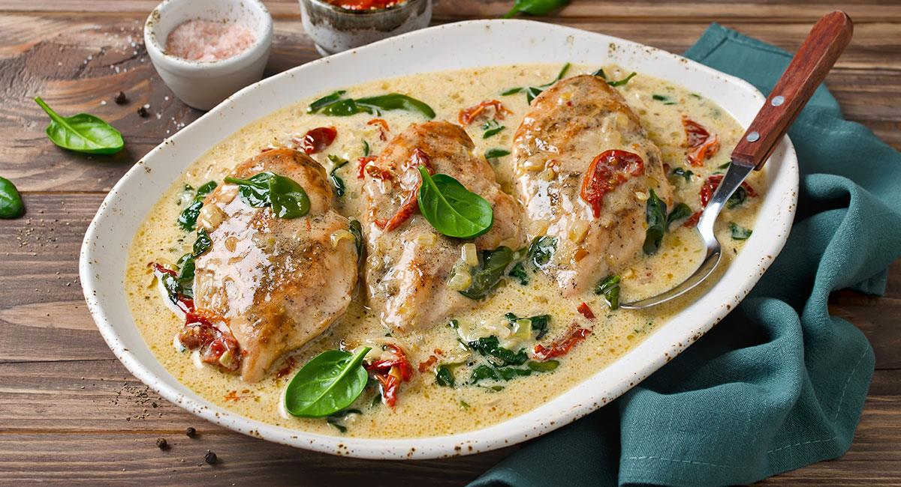

Pollo a la crema

Description
La comida favorita del Santi
Ingredients
- 2 large chicken breasts cut in half lengthwise
- Flour for dredging
- 1 tablespoon olive oil
- 2 tablespoons butter divided
- 1 whole head garlic cloves peeled
- 1/2 cup chicken broth or stock
- 1/2 teaspoon lemon juice
- 1/4 teaspoon garlic powder
- 1 cup heavy/whipping cream
- Salt & pepper to taste
- Parsley chopped (optional)
Steps
-
Cut the chicken in half lengthwise so you have 4 smaller cutlets.
Sprinkle them with some salt & pepper and coat them in the flour.
-
Add the olive oil and 1 tbsp of the butter to a skillet over medium-high
heat. Once the pan is hot, sauté the chicken for 4-5 minutes/side or
until it's nice and golden. Take the chicken out of the pan and set it
aside.
-
Reduce the heat to medium (or even med-low if using cast iron), and add
the rest of the butter to the pan. Let it melt and then add the garlic
cloves. Cook them for 3-4 minutes, stirring often, until they're lightly
browned on the outside.
-
Add the chicken broth, lemon juice, and garlic powder to the pan. Let it
bubble for around 4 minutes or until the liquid is noticeably reduced.
-
Stir in the cream and add the chicken back into the pan. Let it cook for
another 5 minutes or so, until the sauce is reduced and the chicken is
cooked through. Serve with freshly chopped parsley if you wish.